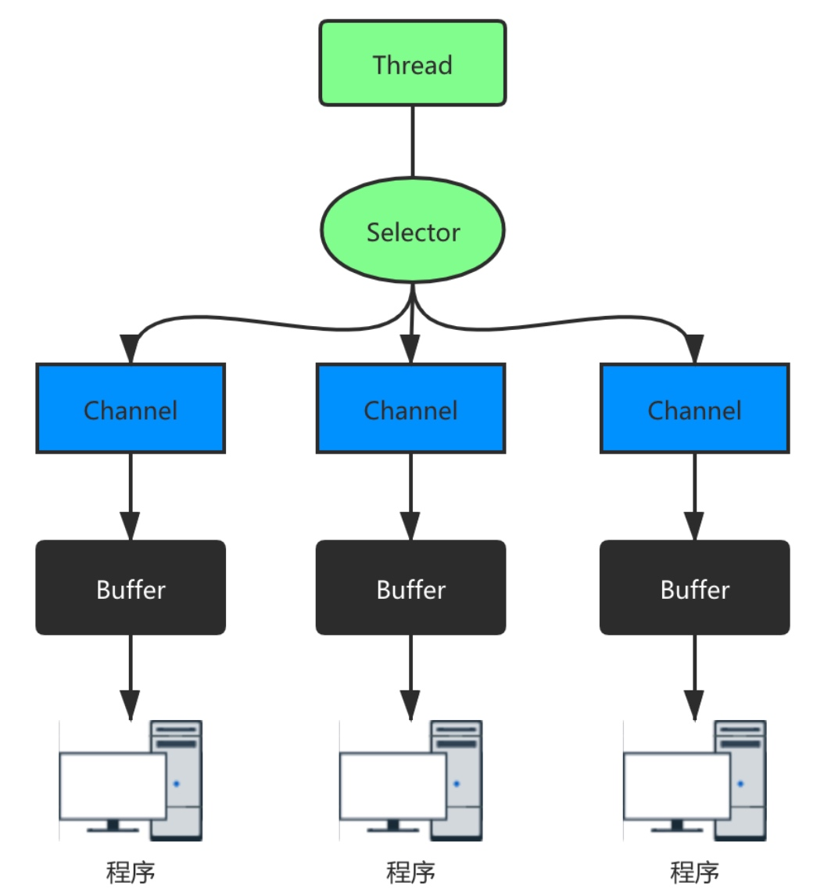

NIO编程
经过前面对 NIO 的介绍，我们理解 NIO 不会在数据没有准备好的时候一直阻塞线程，线程可以继续做其他事情。正是因为这个特点，NIO 可以做到通过一个线程来处理多个操作。
使用场景分析
- BIO 方式适用于连接数目比较小且固定的架构，这种方式对服务器资源要求比较高，并发局限于应用中，JDK1.4 以前的唯一选择，但程序简单易理解。
- NIO 方式适用于连接数目多且连接比较短（轻操作）的架构，比如聊天服务器，弹幕系统，服务器间通讯等。编程比较复杂，JDK1.4 开始支持。
- AIO 方式使用于连接数目多且连接比较长（重操作）的架构，比如相册服务器，充分调用 OS 参与并发操作，编程比较复杂，JDK7 开始支持。
NIO 的三大核心组件

- 每一个 channel 都会对应一个 Buffer；
- Selector 对应一个线程，一个线程对应多个 channel 连接；
- Selector 会根据不同的事件在各个通道上切换，因为程序切换到哪个 channel 是由事件决定的；
- Buffer 是一个内存块，底层是一个数组；
- 和 BIO 的输入输出流不同， NIO 的 Buffer 可以读也可以写，需要使用 flip 方法切换。
缓冲区Buffer
缓冲区本质是一个读写数据的内存块，该对象提供一组方法，可以更轻松的使用内存块。Channel 提供从文件、网络读取数据的通道，读写数据必须经过 Buffer。
Buffer 是一个顶层的抽象类，常用的 Buffer 子类为不同的基本数据类型提供了存储到缓冲区的方式。
Buffer 抽象类定义了所有缓冲区都具备的四个属性来提供关于缓冲区的数据元素信息：
其中所有的 Buffer 子类中最常用的是存储二进制数据的 ByteBuffer，主要方法包括：
1 | public abstract class ByteBuffer { |
通道Channel
NIO 的通道可以同时进行读写，可以从缓冲读数据、也可写数据到缓冲。常用的 Channel 类有：FileChannel、DatagramChannel（UDP文件读写）、ServerSocketChannel 和 SocketChannel（用于 TCP 的数据读写，ServerSocketChannel 类似于 ServerSocket，SocketChannel 类似于 Socket）。
Channel 相当于输入输出流的媒介，用户侧对 buffer 缓冲区进行读写：写时
buffer.put()写入内容，再 write 到 channel 中；读时从 channel 将内容 read 到 buffer 中，再buffer.array()打印内容。
选择器Selector
NIO 用一个线程处理多个客户端的连接，就会用到 Selector，Selector 能够检测多个注册的通道是否有事件发生，如果有事件发生便获取事件然后针对事件进行相应的处理。
只有在连接 or 读写事件发生时才会进行读写，大大减少了系统开销，不必为每个连接创建线程。
IO 线程通常将非阻塞 IO 的空闲时间用于在其他通道上执行 IO 操作，所以单独的线程可以管理多个输入和输出的通道。
NIO非阻塞网络编程
- 当有客户端连接时，会通过 ServerSocketChannel 得到 SocketChannel；
- Selector 监听 select 方法，返回有事件发生的通道个数；
- 将多个 socketChannel 注册到 Selector 上，注册后返回一个 SelectionKey 会和 Selector 关联；
- 有事件发生时通过 selecttionKey 得到 socketChannel，进一步完成业务处理。
ServerSocketChannel
ServerSocketChannel 用于在服务端监听新的客户端 Socket 连接。
1 | public abstract class ServerSocketChannel { |
SocketChannel
SocketChannel 是网络 IO 通道，具体负责进行读写操作，NIO 将缓冲区的数据写入通道，或者将通道的数据读到缓冲区中。
1 | public abstract class SocketChannel { |
NIO和零拷贝
在数据需要在用户态和内核态之间切换时，数据传输的工作都需要 CPU 参与，而 DMA 技术在进行 I/O 设备和内存数据传输时，数据搬运的工作交给 DMA 控制器而 CPU 可以空出来处理别的事情。
传统的文件传输方式在进行 I/O 操作时，需要先从磁盘中进行 DMA 拷贝到内核态的 PageCache，再进行 CPU 拷贝到用户态缓冲区中，再进行 CPU 拷贝从用户缓冲区到内核态 socket 缓冲区中，最后再执行 DMA 拷贝到网卡中待发送。总共需要 4 次上下文切换和 4 次数据拷贝
为了提升文件传输的性能，就需要减少上下文切换的次数和数据拷贝的次数。
减少「上下文切换」的方式是减少系统调用次数，而减少系统调用次数的方式就是通过零拷贝的两种方式——mmap 和 sendFile 优化；
减少「数据拷贝」的方式是避免涉及用户态的两次 CPU 拷贝，因为在文件传输中用户态不会对数据再加工。
mmap + write
为了减少 read 从内核缓冲区到用户缓冲区的数据拷贝开销，通过mmap替换read系统调用函数。
mmap 会以共享缓冲区的方式把内核缓冲区的数据映射到用户缓冲区中，在进行write系统调用时操作系统将内核缓冲区的数据拷贝到 socket 缓冲区中。
通过 mmap + write 的零拷贝方式，仍然需要 4 次上下文切换 + 3 次数据拷贝。
sendFile
通过sendFile系统调用函数可以将上下文切换的次数缩减到 2 次。
甚至更新版本只需要 2 次数据拷贝，PageCache 将描述符和数据长度传给 socket 缓冲区，可以直接将 PageCache 的数据拷贝到网卡中。
通过 sendFile 的零拷贝方式，只需要 2 次上下文切换 + 2 次数据拷贝。